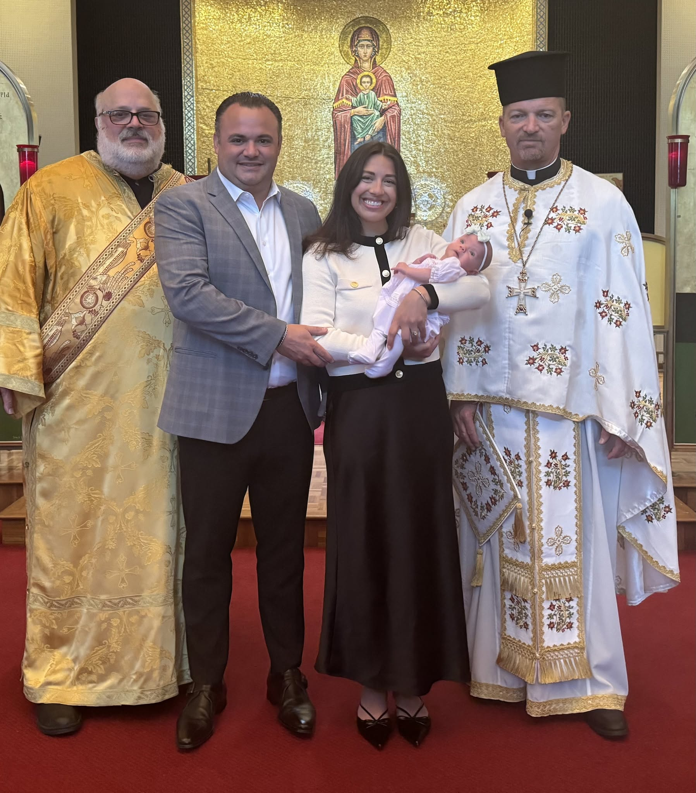
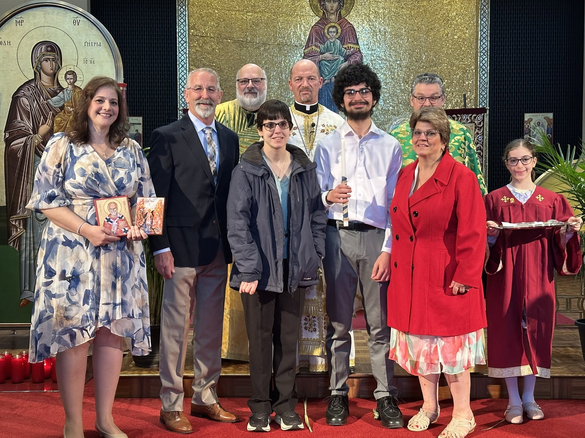
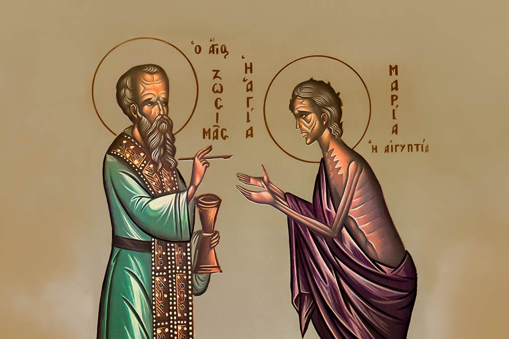
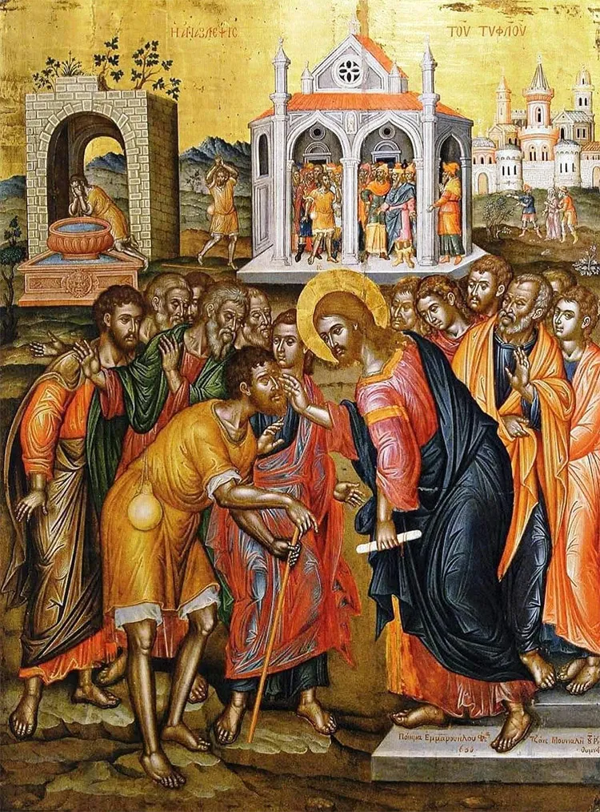
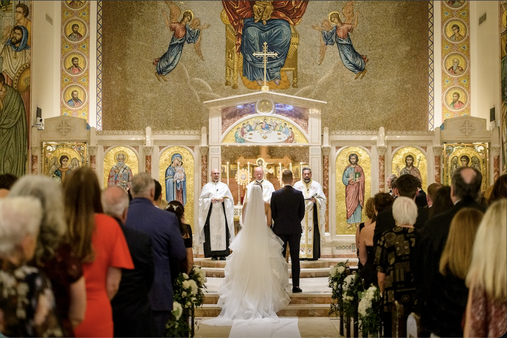
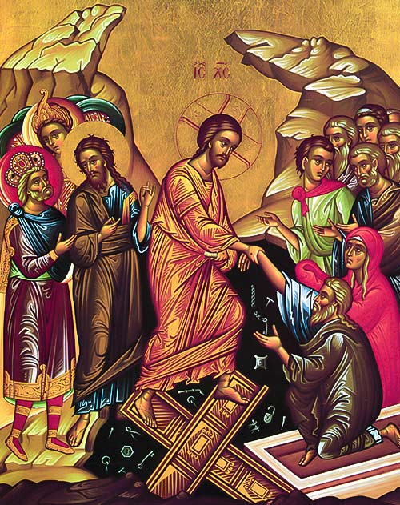

Sacred Milestones in the Life of Faith
From baptisms and weddings to memorial services, the sacraments are where God meets us in the defining moments of life. Here is what to expect for each service and how our priests can help you prepare.
From baptisms and weddings to memorial services, the sacraments are where God meets us in the defining moments of life. Here is what to expect for each service and how our priests can help you prepare.
Σαραντισμός

The Church marks a child's birth with prayers for mother and baby soon after the birth, in the hospital or at home. The child is named on the eighth day, and at 40 days mother and child come to church for the Churching service.
How to arrange: Email Fr. Rick after the birth, or call the parish office to schedule the 40-day Churching.
Βάπτισμα

Baptism joins a child, or an adult who was not baptized as an infant, to Christ and the Church. It is done by immersion in water and followed right away by Chrismation, the gift of the Holy Spirit. Families often celebrate afterward with relatives and friends.
How to arrange: Email Fr. Rick at least two months before the date you have in mind.
Χρίσμα

Chrismation receives someone already baptized in another Trinitarian Christian church into the Orthodox Church. They are anointed with the oil of Chrism, which gives the gift of the Holy Spirit.
How to arrange: Email Fr. Rick to ask about the catechism class and next steps.
Εξομολόγηση

Confession is a private sacrament with the priest: a chance to be honest before God about where you have fallen short, and to receive His forgiveness and guidance.
How to arrange: Contact Fr. Rick or Fr. Peter directly, or call the parish office to find a time.
Ευχέλαιο

Holy Unction is anointing with blessed oil for the healing of body and soul. It is offered to anyone who is sick, facing surgery, or in need of God's strength and comfort.
How to arrange: Call the parish office or email Fr. Rick to arrange a time.
Γάμος

The Sacrament of Marriage unites a couple as husband and wife with the blessing of Jesus Christ. It is one of the most joyful services in the Orthodox Church, with the exchange of rings, the crowning, and the common cup.
How to arrange: Call the parish office at least a year ahead of your date.
Μνημόσυνο

A memorial service can be held on a Sunday or another day. Memorials are traditionally offered at 40 days, 3 months, 6 months, 9 months, and one year after a death, and on each anniversary after that.
How to arrange: Call the parish office to schedule a memorial.
Κηδεία

Funerals are best planned well ahead of time, with a funeral home and the parish. When a death is sudden, the parish will help you through each step.
How to arrange: Call the parish office at any hour.
Every family's situation is different. Call or write and we'll help you work out the next step.